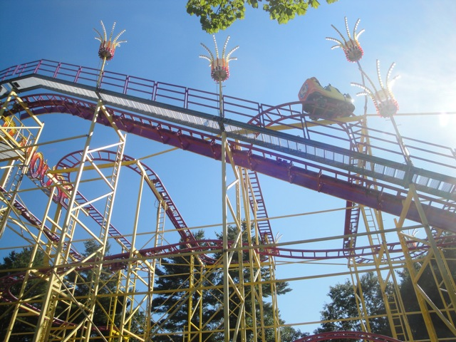
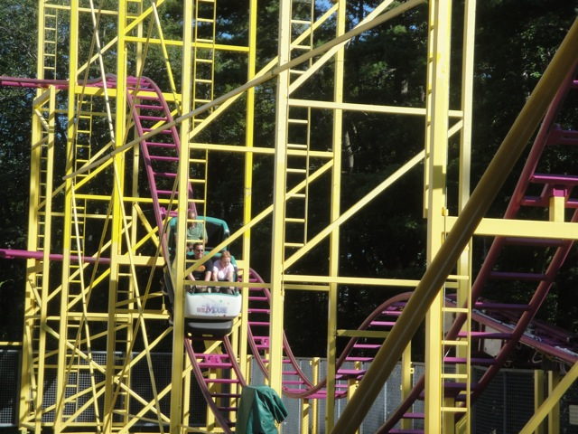
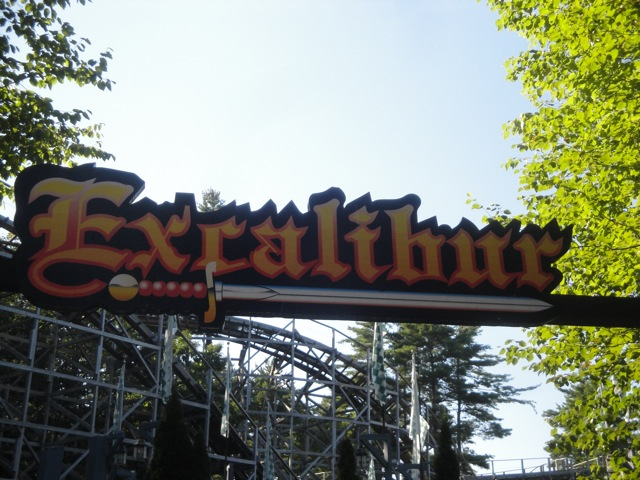
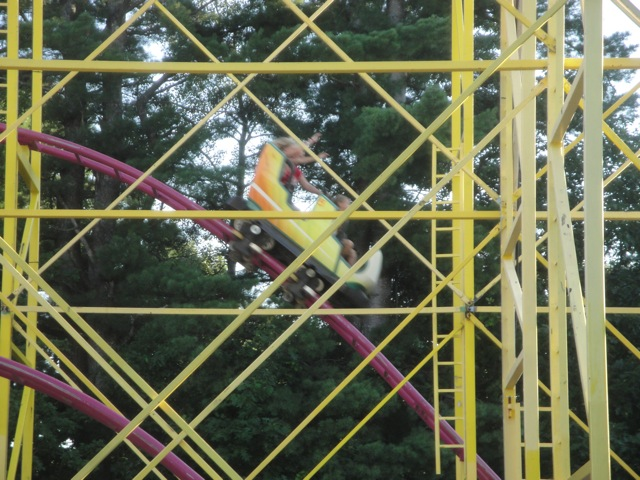
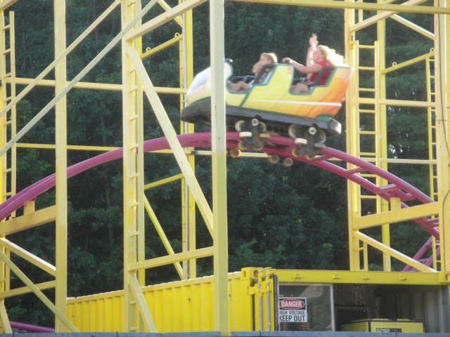
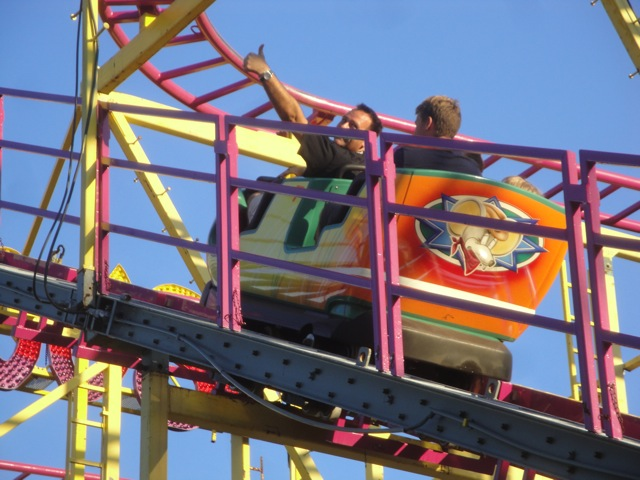
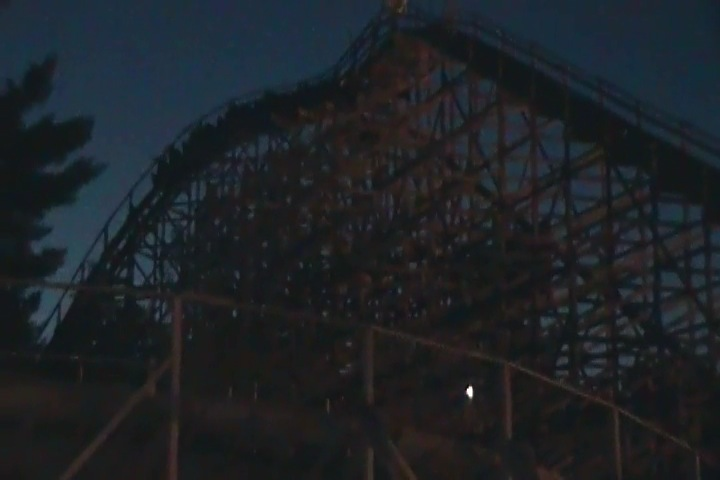

TPR's Northeast Trip
Bowcraft & NYC Coney Island Quassy Lake Compounce Six Flags New England
Palace Playland
Funtown Splashtown
Canobie Lake Park
La Ronde Great Escape Six Flags Great Adventure
All right. After Palace Playland, we hit up Maine's other park, Funtown Splashtown U.S.A.

All right. First up, let's get the Wild Mouse credit out of the way.
 "What type of ride is this again?"
"What type of ride is this again?"

Dude, this thing ran a GREAT program. No trims at all whatsoever!!
Dammit!!! Why does our log always do that!!!?
This was quite an interesting log flume. It almost seemed like it was made in RCT.
 SPLOOSH!!!!!!
SPLOOSH!!!!!!
Yeah, this is boring after the Quassy Chairswings.

All right. Now time for the other coaster and main reason why we're here.
 Excalibur!!! The park's woodie and the biggest coaster in Maine.
Excalibur!!! The park's woodie and the biggest coaster in Maine.
 While it doesn't get much attention since it's in a small park in Maine, it really is a good wooden coaster.
While it doesn't get much attention since it's in a small park in Maine, it really is a good wooden coaster.
 It really reminds me of Ghostrider back before they f*cking stopped you in the turnaround.
It really reminds me of Ghostrider back before they f*cking stopped you in the turnaround.
Dude!!! That is awesome!!!
Yep. We've found YET ANOTHER S&S Tower on this trip. And this one was really good.
"Will you be my candle on the water?"
Did I subconsiously touch the dragon and not know it because ever since this awesome awesome trip, my luck has been pure sh*t.
"You laugh now. But I will show you!!! Someday, I will be a world champion at Skeeball!!!"
"Ok. So I've still got a long way to go, but I can get better!!!"
Dude, they give out Pacman Ghosts as prizes in this park!!! This park is awesome!!!

Yah. We rode the Wild Mouse again since we could.

Hey, it's much better than Mullholland Mad...I mean Goofy's Sky School.
 Yep. We rode the Tilt a Whirl and it was fun.
Yep. We rode the Tilt a Whirl and it was fun.

"Yes!!! My plan to break the Wild Mouse at Funtown Splashtown is a success!!!! This is even better than when I stopped the Big Dipper from being rebuilt!!!!!! Why do I do these things? No reason. I'm just pure evil. *evil laugh* "
 "Dude!!! I've found Pacman Porn!!!!!"
"Dude!!! I've found Pacman Porn!!!!!"
This is dinner. We ate this. It was good. Moving on.
Here's yet another random flat ride that we had fun on at Funtown Splashtown.
 Ooh. I wonder what Astrosphere could be. I just know they're having a TPR Takeover of it.
Ooh. I wonder what Astrosphere could be. I just know they're having a TPR Takeover of it.
Dude!!! It's an indoor scrambler!!! While the program itself sucked, it had an awesome light show that made the ride awesome.
We also had a TPR Takeover of the Teacups.
"Come on Ceaser!!! Spin this damn thing already!!!"
The car ride at night looks fun and all, but we've got more important stuff to do right now.
 Like have night time Excalibur ERT!!!!
Like have night time Excalibur ERT!!!!
EXCITEMENT EVERYONE!!!!

Excalibur may be decent in the afternoon, but HOLY CRAP does it get amazing at night!!!!!
This picture is too awesome for a caption.
"Double Rides for everyone!!!!!"
Oh, and we got to leave the park through Excalibur and get close with the track. Thanks for the great time Funtown Splashtown.
Canobie Lake Park
Home